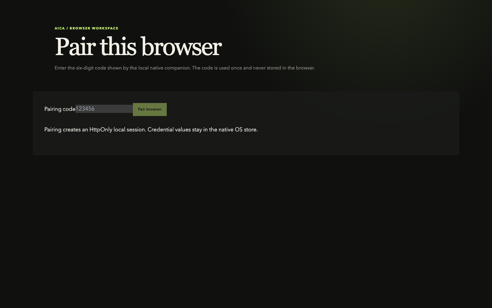
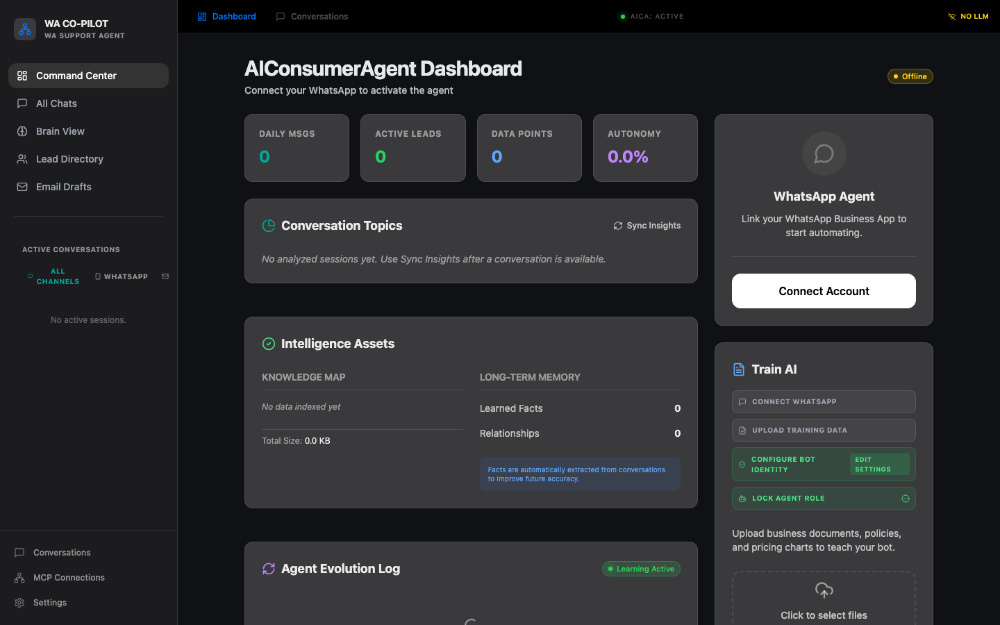
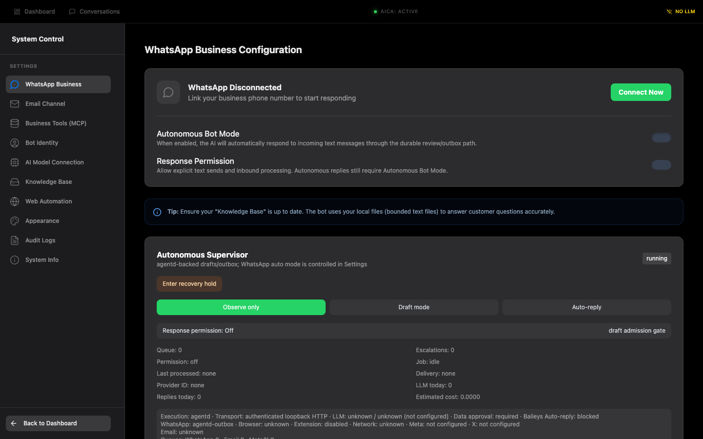
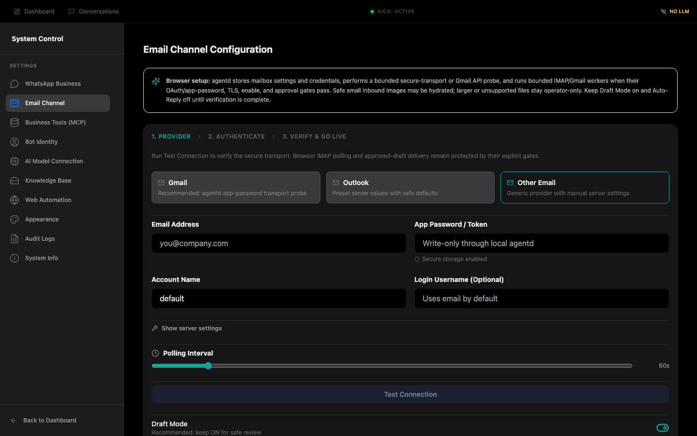
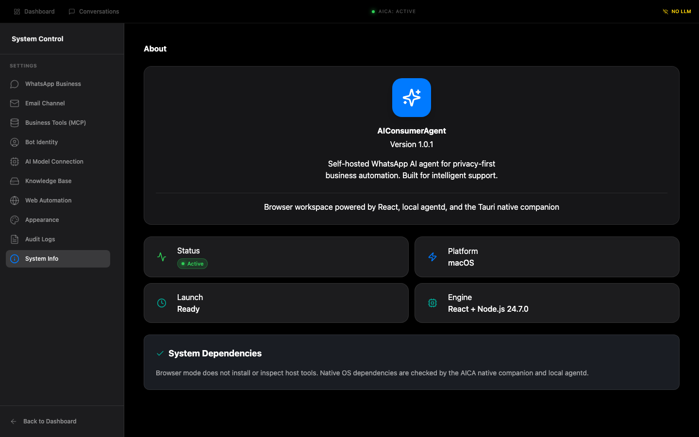

AICA / Windows-first browser workspace
Install once. Work in your browser.
AICA uses a lightweight Tauri companion for Windows-native capabilities and a local agentd service for durable, authenticated operations. The product workspace stays in Edge or Chrome.
Download verified browser bundle · View migration PR
1. Download and install
- Download the signed Windows installer from a project release.
- Install per user and launch AICA Native Host.
- The companion starts agentd on a loopback-only, per-run port.
2. Open and pair the browser
Use Open browser workspace in the companion. Enter the one-time six-digit code shown by the companion, then select Pair browser.

3. Use the browser workspace
After pairing, use the browser for dashboard, chat, conversations, knowledge, lead directory, Email drafts, MCP, settings, and autonomy.

4. Configure channels
Open Settings → WhatsApp Business. Connect Baileys or Cloud transport. Verify the account before enabling response permission or autonomous mode.
Open Settings → Email Channel. Save secure transport settings, keep Draft Mode on, test the connection, then enable polling.


5. Post-setup behavior
- Browser actions call authenticated local agentd APIs.
- Agentd persists sessions, drafts, queues, recovery state, notifications, and delivery history.
- Draft approval gates outbound sends.
- Tauri handles only native seams: lifecycle, tray, OS credentials, folder reveal, diagnostics, and future native speech.
- Gmail IDs and SMTP RFC Message-IDs provide correlation, not final-delivery proof.
6. Restart and troubleshoot
- Restart the native companion and open the new workspace URL it reports.
- Pair again only when the session expired.
- For “Local service unavailable,” start the companion and refresh.
- For revoked credentials, use native reauthentication or provider sign-in.
